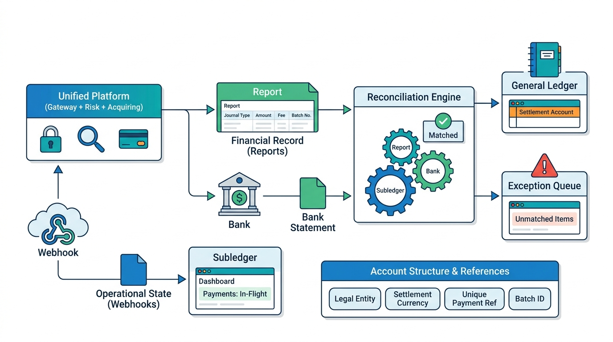

Part II — PLATFORMS: What Each Is For, and What It Costs to Depend On
Adyen: One Platform from Checkout to Settlement

Image generated by Google Gemini (gemini-3-pro-image-preview)
Part II — PLATFORMS: What Each Is For, and What It Costs to Depend On

Image generated by Google Gemini (gemini-3-pro-image-preview)